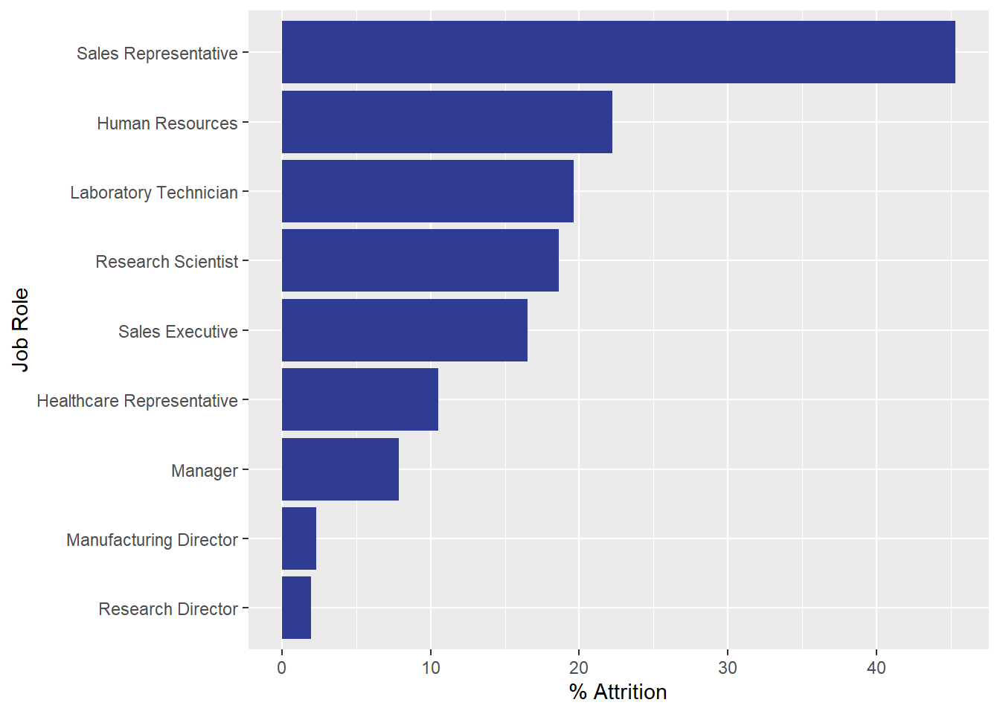

Libraries Used
library(tidyverse)
library(caret)Data Import and Cleaing
data <- read.csv("Datasets/CaseStudy2-data.csv", header = TRUE)
#Remove columns that aren't useful
data <- subset(data, select = -c(ID,EmployeeCount,EmployeeNumber,Over18,StandardHours))
#Change all character variables to factors
data[sapply(data, is.character)] <- lapply(data[sapply(data, is.character)],
as.factor)
#Create binary var for attrition
data$AttritionCoded <- with(data, ifelse(Attrition == "Yes", 1, 0))Creating Train and Test Sets
split <- 0.75
trainIndex <- sample(seq(1,870,1),870*split)
dataTrain <- data[trainIndex,]
dataTest <- data[-trainIndex,]Here we are building a kNN model to predict attrition. We will use 10-fold cross validation and upsample the data to create a balanced dataset.
ctrl <- trainControl(method = "repeatedcv",
number = 10,
repeats = 5,
verboseIter = FALSE,
sampling = "up")
model <- train(Attrition ~ Age+
EducationField+EnvironmentSatisfaction+
Gender+HourlyRate+JobLevel+
JobRole+JobSatisfaction+JobInvolvement+
MonthlyIncome+MonthlyRate+NumCompaniesWorked+
OverTime+RelationshipSatisfaction+WorkLifeBalance+
YearsSinceLastPromotion+YearsWithCurrManager,
data = dataTrain,
method = "knn",
trControl = ctrl,
preProcess = c("center","scale"))
predict <- predict(model,newdata = dataTest)
confusionMatrix(table(predict,dataTest$Attrition))## Confusion Matrix and Statistics
##
##
## predict No Yes
## No 133 16
## Yes 48 21
##
## Accuracy : 0.7064
## 95% CI : (0.6411, 0.766)
## No Information Rate : 0.8303
## P-Value [Acc > NIR] : 0.9999980
##
## Kappa : 0.225
##
## Mcnemar's Test P-Value : 0.0001066
##
## Sensitivity : 0.7348
## Specificity : 0.5676
## Pos Pred Value : 0.8926
## Neg Pred Value : 0.3043
## Prevalence : 0.8303
## Detection Rate : 0.6101
## Detection Prevalence : 0.6835
## Balanced Accuracy : 0.6512
##
## 'Positive' Class : No
## Attrition Rate by Job Role
#create dataset
jobdat <- data %>% group_by(JobRole) %>%
summarize(percAttr = sum(AttritionCoded)/length(AttritionCoded)*100)
#plot data
jobdat %>% ggplot(aes(reorder(JobRole, percAttr), percAttr)) +
geom_col(fill = "#303c94") + coord_flip() + labs(y = "% Attrition", x= "Job Role")
Monthly Income Regression
fit3 <- lm(MonthlyIncome ~ JobLevel+TotalWorkingYears+
JobRole+JobRole*JobLevel, data = data)
summary(fit3)##
## Call:
## lm(formula = MonthlyIncome ~ JobLevel + TotalWorkingYears + JobRole +
## JobRole * JobLevel, data = data)
##
## Residuals:
## Min 1Q Median 3Q Max
## -3500.9 -629.2 -99.6 597.1 4333.0
##
## Coefficients:
## Estimate Std. Error t value Pr(>|t|)
## (Intercept) -608.154 456.272 -1.333 0.182929
## JobLevel 2985.140 186.435 16.012 < 2e-16 ***
## TotalWorkingYears 50.750 7.505 6.762 2.53e-11 ***
## JobRoleHuman Resources 364.079 646.258 0.563 0.573335
## JobRoleLaboratory Technician 1759.720 508.739 3.459 0.000569 ***
## JobRoleManager 3446.214 1050.768 3.280 0.001081 **
## JobRoleManufacturing Director -907.251 622.758 -1.457 0.145533
## JobRoleResearch Director 3735.449 807.041 4.629 4.26e-06 ***
## JobRoleResearch Scientist 920.748 513.398 1.793 0.073258 .
## JobRoleSales Executive -806.340 549.594 -1.467 0.142703
## JobRoleSales Representative 939.944 786.148 1.196 0.232173
## JobLevel:JobRoleHuman Resources -351.768 384.389 -0.915 0.360380
## JobLevel:JobRoleLaboratory Technician -1667.611 244.362 -6.824 1.68e-11 ***
## JobLevel:JobRoleManager 39.383 280.964 0.140 0.888557
## JobLevel:JobRoleManufacturing Director 426.238 245.000 1.740 0.082265 .
## JobLevel:JobRoleResearch Director -8.118 245.656 -0.033 0.973647
## JobLevel:JobRoleResearch Scientist -832.004 259.891 -3.201 0.001419 **
## JobLevel:JobRoleSales Executive 330.355 220.463 1.498 0.134385
## JobLevel:JobRoleSales Representative -1001.410 618.828 -1.618 0.105982
## ---
## Signif. codes: 0 '***' 0.001 '**' 0.01 '*' 0.05 '.' 0.1 ' ' 1
##
## Residual standard error: 996.4 on 851 degrees of freedom
## Multiple R-squared: 0.954, Adjusted R-squared: 0.953
## F-statistic: 980.7 on 18 and 851 DF, p-value: < 2.2e-16Job Satisfaction by Attrition T-Test
#job satisfaction by attrition, ttest
x <- data %>% filter(Attrition == "Yes")
x <- x[,"JobSatisfaction"]
y <- data %>% filter(Attrition == "No")
y <- y[,"JobSatisfaction"]
t.test(x,y)##
## Welch Two Sample t-test
##
## data: x and y
## t = -3.2202, df = 197.97, p-value = 0.001497
## alternative hypothesis: true difference in means is not equal to 0
## 95 percent confidence interval:
## -0.5255243 -0.1263348
## sample estimates:
## mean of x mean of y
## 2.435714 2.761644Monthly Income by Attrition T-Test
#montlyincome by attrition, ttest
a <- data %>% filter(Attrition == "Yes")
a <- a[,"MonthlyIncome"]
b <- data %>% filter(Attrition == "No")
b <- b[,"MonthlyIncome"]
t.test(a,b)##
## Welch Two Sample t-test
##
## data: a and b
## t = -5.3249, df = 228.45, p-value = 2.412e-07
## alternative hypothesis: true difference in means is not equal to 0
## 95 percent confidence interval:
## -2654.047 -1220.382
## sample estimates:
## mean of x mean of y
## 4764.786 6702.000YouTube Presentation: https://youtu.be/b8qVZO8sTnY RShiny App: https://josh-turk.shinyapps.io/AttritionProject/